library(tidytuesdayR)
library(tidyverse)7 Revenue and expenditure in sport
NSC-R Tidy Tuesday May 2022
7.1 Introduction
The dataset for this Tidy Tuesday is about Collegiate Sports in US. Alex Trinidad explores how revenue and expenditure are distributed in sports. He also looks at the differences in sport revenues and expenditures between men and women.`He presented this on May 3th 2022 in the NSC-R Tidy Tuesday serie. Here you can find the original post (Trinidad, 2022)
7.2 Load packages and importing data
Identify TidyTuesday data sets in 2022.
tidytuesdayR::tt_datasets("2022") Week Date Data
1 1 2022-01-04 Bring your own data from 2022!
2 2 2022-01-11 Bee Colony losses
3 3 2022-01-18 Chocolate Bar ratings
4 4 2022-01-25 Board games
5 5 2022-02-01 Dog breeds
6 6 2022-02-08 Tuskegee Airmen
7 7 2022-02-15 #DuBoisChallenge2022
8 8 2022-02-22 World Freedom index
9 9 2022-03-01 Alternative Fuel Stations
10 10 2022-03-08 Erasmus student mobility
11 11 2022-03-15 CRAN/BIOC Vignettes
12 12 2022-03-22 Baby names
13 13 2022-03-29 Collegiate Sports Budgets
14 14 2022-04-05 Digital Publications
15 15 2022-04-12 Indoor Air Pollution
16 16 2022-04-19 Crossword Puzzles and Clues
17 17 2022-04-26 Kaggle Hidden Gems
18 18 2022-05-03 Solar/Wind utilities
19 19 2022-05-10 NYTimes best sellers
20 20 2022-05-17 Eurovision
21 21 2022-05-24 Women's Rugby
22 22 2022-05-31 Company reputation poll
23 23 2022-06-07 Pride Corporate Accountability Project
24 24 2022-06-14 US Drought
25 25 2022-06-21 Juneteenth
26 26 2022-06-28 UK Gender pay gap
27 27 2022-07-05 San Francisco Rentals
28 28 2022-07-12 European flights
29 29 2022-07-19 Technology Adoption
30 30 2022-07-26 Bring your own data
31 31 2022-08-02 Oregon Spotted Frog
32 32 2022-08-09 Ferris Wheels
33 33 2022-08-16 Open Source Psychometrics
34 34 2022-08-23 CHIP dataset
35 35 2022-08-30 Pell Grants
36 36 2022-09-06 LEGO database
37 37 2022-09-13 Bigfoot
38 38 2022-09-20 Hydro Wastewater plants
39 39 2022-09-27 Artists in the USA
40 40 2022-10-04 Product Hunt products
41 41 2022-10-11 Ravelry data
42 42 2022-10-18 Stranger things dialogue
43 43 2022-10-25 Great British Bakeoff
44 44 2022-11-01 Horror Movies
45 45 2022-11-08 Radio Stations
46 46 2022-11-15 Web page metrics
47 47 2022-11-22 UK Museums
48 48 2022-11-29 FIFA World Cup
49 49 2022-12-06 Elevators
50 50 2022-12-13 Monthly State Retail Sales
51 51 2022-12-20 Weather Forecast Accuracy
52 52 2022-12-27 Star Trek Timelines
Source
1
2 USDA
3 Flavors of Cacao
4 Kaggle
5 American Kennel Club
6 Commemorative Airforce (CAF) by way of the VA-TUG
7 Anthony Starks
8 UN and Freedom House
9 US DOT
10 Data.Europa.eu
11 Robert Flight GitHub
12 US babynames & nzbabynames
13 Equity in Athletics Data Analysis
14 Project Oasis
15 OurWorldInData.org
16 Cryptics.georgeho.org
17 Kaggle
18 Berkeley Lab
19 Post45 Data
20 Eurovision
21 Women's Rugby - ScrumQueens
22 Axios and Harris Poll
23 Data For Progress
24 Drought.gov
25 WEB DuBois style by Anthony Starks
26 gender-pay-gap.service.gov.uk
27 Kate Pennington
28 Eurocontrol
29 data.nber.org
30 None
31 usgs.gov spotted frog data
32 ferriswheels
33 Open-Source Psychometrics Project
34 CHIP Dataset
35 US Dept of Education
36 rebrickable
37 Data.World
38 Macedo et al, 2022
39 arts.gov
40 components.one
41 ravelry.com
42 8flix.com
43 bakeoff pkg
44 The Movie Database
45 Wikipedia
46 httpArchive.org
47 MuseWeb by way of Data Is Plural
48 Kaggle FIFA World Cup
49 Elevators data
50 US Census Bureau Monthly State Retails Sales
51 Weather Forecast Capstone Project
52 rtrek package
Article
1
2 Bee Informed
3 Will Canniford on Kaggle
4 Alyssa Goldberg
5 Vox
6 Wikipedia & Air Force Historical Research Agency
7 Nightingale by DVS
8 Freedom House
9 EIA
10 Wimdu.co
11 Robert Flight GitHub
12 Emily Kothe's nzbabynames vignette
13 NPR
14 Project Oasis Report
15 OurWorldInData.org
16 Towards Data Science
17 Kaggle - Notebooks of the Week
18 Berkeley Lab report
19 Finding Trends in NY Times Best Sellers - Kailey Smith
20 Tanya Shapiro
21 ScrumQueens
22 The Harris Poll
23 Data For Progress
24 Drought.gov report
25 Isabella Benabaye's blog on Juneteenth
26 ons.gov.uk
27 Matrix-Berkeley
28 ec.europa.eu
29 www.cgdev.org
30 None
31 usgs.gov spotted-frog-article
32 ferriswheels
33 Character Personality
34 arxiv paper
35 pell R package
36 rebrickable
37 Finding Bigfoot
38 HydroWASTE v1.0
39 Artists in the Workforce
40 The Gamer and the Nihilist by Andrew Thompson
41 {ravelRy} R package
42 freeCodeCamp & 'stringr things'
43 Data Visualization in the Tidyverse - The Great Tidy Plot Off
44 Tanya Shapiro's Horror Movies
45 Visualizing the Geography of FM Radio
46 DataWrapper & Data is Plural
47 MuseWeb Key Findings
48 Dataset Notebooks
49 Elevators data package and examples
50 Interactive Visualization from US Census Bureau
51 Weather Forecast Capstone Project
52 rtrek packageDownload data set. Note: As list.
ttdata <- tidytuesdayR::tt_load(x = 2022, week = 13)
Downloading file 1 of 1: `sports.csv`Select data set of interest.
sportdt <- ttdata[[1]]Alternative
sportdt <- ttdata$sports7.3 Data Exploration
Explore data set
glimpse(sportdt)Rows: 132,327
Columns: 28
$ year <dbl> 2015, 2015, 2015, 2015, 2015, 2015, 2015, 2015, 2~
$ unitid <dbl> 100654, 100654, 100654, 100654, 100654, 100654, 1~
$ institution_name <chr> "Alabama A & M University", "Alabama A & M Univer~
$ city_txt <chr> "Normal", "Normal", "Normal", "Normal", "Normal",~
$ state_cd <chr> "AL", "AL", "AL", "AL", "AL", "AL", "AL", "AL", "~
$ zip_text <chr> "35762", "35762", "35762", "35762", "35762", "357~
$ classification_code <dbl> 2, 2, 2, 2, 2, 2, 2, 2, 2, 2, 1, 1, 1, 1, 1, 1, 1~
$ classification_name <chr> "NCAA Division I-FCS", "NCAA Division I-FCS", "NC~
$ classification_other <chr> NA, NA, NA, NA, NA, NA, NA, NA, NA, NA, NA, NA, N~
$ ef_male_count <dbl> 1923, 1923, 1923, 1923, 1923, 1923, 1923, 1923, 1~
$ ef_female_count <dbl> 2300, 2300, 2300, 2300, 2300, 2300, 2300, 2300, 2~
$ ef_total_count <dbl> 4223, 4223, 4223, 4223, 4223, 4223, 4223, 4223, 4~
$ sector_cd <dbl> 1, 1, 1, 1, 1, 1, 1, 1, 1, 1, 1, 1, 1, 1, 1, 1, 1~
$ sector_name <chr> "Public, 4-year or above", "Public, 4-year or abo~
$ sportscode <dbl> 1, 2, 3, 7, 8, 15, 16, 22, 26, 33, 1, 2, 3, 8, 12~
$ partic_men <dbl> 31, 19, 61, 99, 9, NA, NA, 7, NA, NA, 32, 13, NA,~
$ partic_women <dbl> NA, 16, 46, NA, NA, 21, 25, 10, 16, 9, NA, 20, 68~
$ partic_coed_men <dbl> NA, NA, NA, NA, NA, NA, NA, NA, NA, NA, NA, NA, N~
$ partic_coed_women <dbl> NA, NA, NA, NA, NA, NA, NA, NA, NA, NA, NA, NA, N~
$ sum_partic_men <dbl> 31, 19, 61, 99, 9, 0, 0, 7, 0, 0, 32, 13, 0, 10, ~
$ sum_partic_women <dbl> 0, 16, 46, 0, 0, 21, 25, 10, 16, 9, 0, 20, 68, 7,~
$ rev_men <dbl> 345592, 1211095, 183333, 2808949, 78270, NA, NA, ~
$ rev_women <dbl> NA, 748833, 315574, NA, NA, 410717, 298164, 13114~
$ total_rev_menwomen <dbl> 345592, 1959928, 498907, 2808949, 78270, 410717, ~
$ exp_men <dbl> 397818, 817868, 246949, 3059353, 83913, NA, NA, 9~
$ exp_women <dbl> NA, 742460, 251184, NA, NA, 432648, 340259, 11388~
$ total_exp_menwomen <dbl> 397818, 1560328, 498133, 3059353, 83913, 432648, ~
$ sports <chr> "Baseball", "Basketball", "All Track Combined", "~Select variables of interest and define chr-variables as fct
ttdt_selection <- sportdt %>%
dplyr::select(year, institution_name, classification_name, partic_men, partic_women,
ef_male_count, ef_female_count, ef_total_count, rev_men,
rev_women,total_rev_menwomen, exp_men, exp_women,
total_exp_menwomen, sports) %>%
mutate(year = as.factor(year),
institution_name = as.factor(institution_name),
classification_name = as.factor(classification_name),
sports = as.factor(sports),
total_par = partic_men + partic_women) Now we can answer some questions:
How many years?
sum(table(unique(ttdt_selection$year)))[1] 5Or:
sum(table(fct_unique(ttdt_selection$year)))[1] 5How many divisions?
sum(table(unique(ttdt_selection$classification_name)))[1] 19How may institutions?
sum(table(unique(ttdt_selection$institution_name)))[1] 2212How many sports?
sum(table(unique(ttdt_selection$sports)))[1] 38How many cases per wave?
ttdt_selection %>%
count(year)# A tibble: 5 x 2
year n
<fct> <int>
1 2015 17345
2 2016 17414
3 2017 17628
4 2018 17772
5 2019 62168How many cases per sport?
ttdt_selection %>%
count(sports)# A tibble: 38 x 2
sports n
<fct> <int>
1 All Track Combined 4870
2 Archery 1557
3 Badminton 1554
4 Baseball 8644
5 Basketball 10000
6 Beach Volleyball 1988
7 Bowling 2176
8 Diving 1530
9 Equestrian 1799
10 Fencing 1687
# ... with 28 more rows7.4 Visualizations
Plot measures per sport
ggplot(data = ttdt_selection) +
geom_bar(mapping = aes(x = sports, color = sports)) +
theme(legend.position = "none")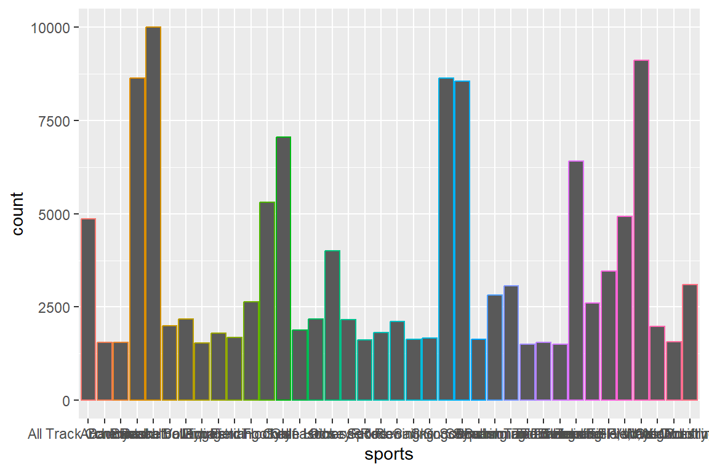
Plot measures per sport (y axis)
ggplot(data = ttdt_selection) +
geom_bar(mapping = aes(y = sports, color = sports))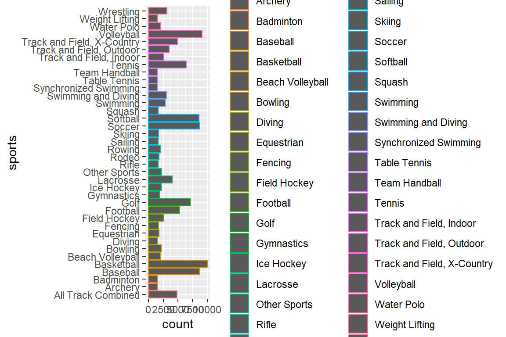
Plot measures per sport (y axis ordered infrequent).
ggplot(data = ttdt_selection) +
geom_bar(mapping = aes(y = fct_infreq(sports), color = sports))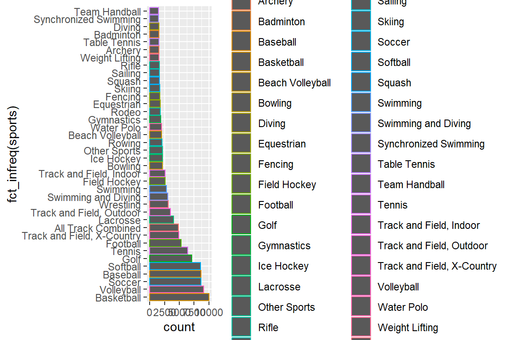
Plot measures per sport (y)
ggplot(data = ttdt_selection) +
geom_bar(mapping = aes(y = fct_rev(fct_infreq(sports)), color = sports))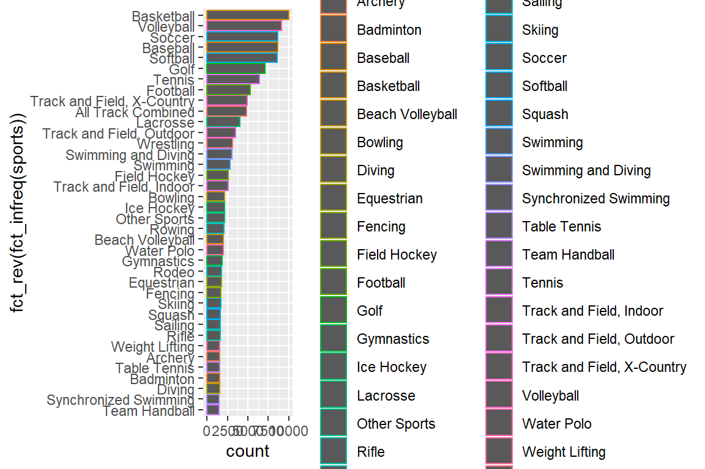
Plot measures per sport (y)
ggplot(data = ttdt_selection) +
geom_bar(mapping = aes(y = fct_rev(fct_infreq(sports)), color = sports)) +
ylab("Sports") 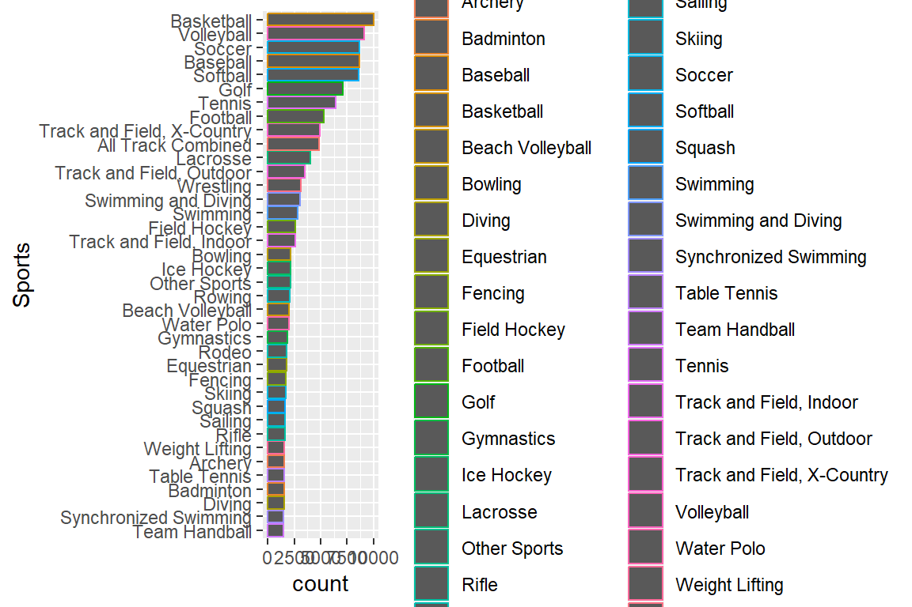
Plot measures per sport (per year)
ggplot(data = ttdt_selection) +
geom_bar(mapping = aes(y = fct_rev(fct_infreq(sports)), color = sports)) +
ylab("Sports") +
facet_wrap(vars(year)) +
theme(legend.position = "none")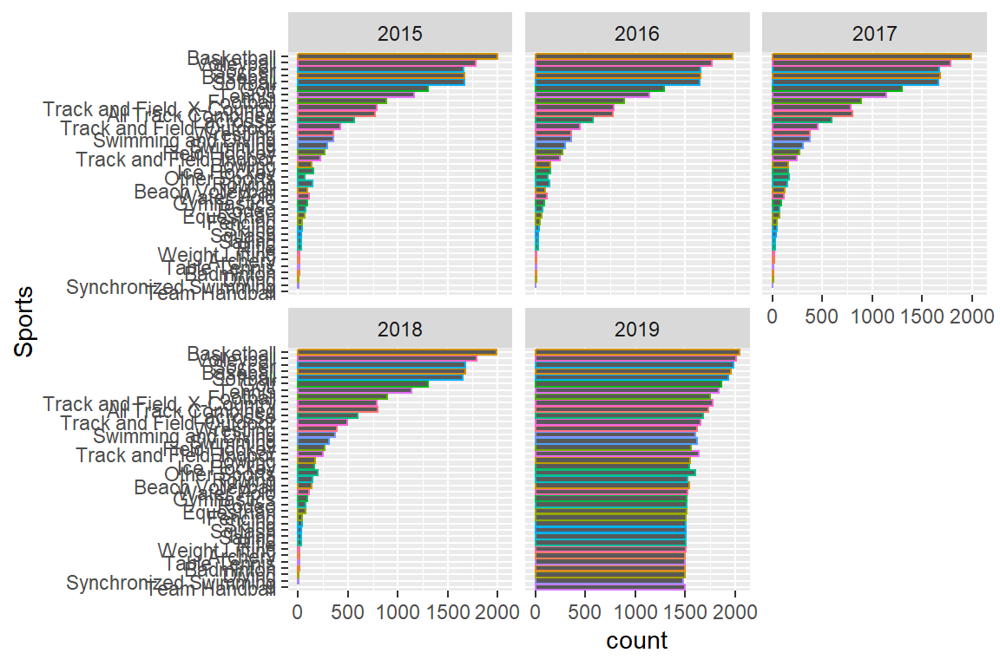
7.5 Missing data
Is any NA in any of my variables?
summary(ttdt_selection) year institution_name
2015:17345 Westminster College: 238
2016:17414 Union College : 233
2017:17628 Columbia College : 187
2018:17772 Bethel University : 181
2019:62168 Marian University : 166
Emmanuel College : 162
(Other) :131160
classification_name partic_men partic_women
NCAA Division III with football :18835 Min. : 1.00 Min. : 1.00
NCAA Division III without football:12310 1st Qu.: 13.00 1st Qu.: 11.00
NJCAA Division I :11831 Median : 22.00 Median : 16.00
NCAA Division II with football :11535 Mean : 30.86 Mean : 20.71
NCAA Division I-FBS :10052 3rd Qu.: 35.00 3rd Qu.: 23.00
NCAA Division II without football : 9571 Max. :331.00 Max. :327.00
(Other) :58193 NA's :70462 NA's :63442
ef_male_count ef_female_count ef_total_count rev_men
Min. : 0 Min. : 0 Min. : 0 Min. : 65
1st Qu.: 513 1st Qu.: 652 1st Qu.: 1194 1st Qu.: 63428
Median : 986 Median : 1248 Median : 2259 Median : 158126
Mean : 2126 Mean : 2496 Mean : 4622 Mean : 809011
3rd Qu.: 2385 3rd Qu.: 2860 3rd Qu.: 5237 3rd Qu.: 400604
Max. :35954 Max. :30325 Max. :66279 Max. :156147208
NA's :70462
rev_women total_rev_menwomen exp_men exp_women
Min. : 0 Min. : 130 Min. : 65 Min. : 65
1st Qu.: 58746 1st Qu.: 96299 1st Qu.: 63062 1st Qu.: 59301
Median : 138318 Median : 228776 Median : 159666 Median : 141800
Mean : 279346 Mean : 795231 Mean : 662386 Mean : 331594
3rd Qu.: 331120 3rd Qu.: 541876 3rd Qu.: 424025 3rd Qu.: 361860
Max. :21440365 Max. :156147208 Max. :69718059 Max. :9485162
NA's :63444 NA's :45193 NA's :70462 NA's :63442
total_exp_menwomen sports total_par
Min. : 130 Basketball:10000 Min. : 2.00
1st Qu.: 96436 Volleyball: 9122 1st Qu.: 22.00
Median : 234559 Soccer : 8647 Median : 32.00
Mean : 732422 Baseball : 8644 Mean : 45.66
3rd Qu.: 585604 Softball : 8560 3rd Qu.: 53.00
Max. :69718059 Golf : 7060 Max. :617.00
NA's :45191 (Other) :80294 NA's :88713 Remove NAs from revenues in men and women.
myselection <- ttdt_selection %>%
filter(!rev_men %in% NA & !rev_women %in% NA)Check if NA’s in myselection dataset.
summary(myselection) year institution_name
2015:8559 Westminster College: 103
2016:8628 Bethel University : 84
2017:8767 Union College : 84
2018:8880 Emmanuel College : 79
2019:8780 Harvard University : 75
Marian University : 73
(Other) :43116
classification_name partic_men partic_women
NCAA Division III with football : 8268 Min. : 1.00 Min. : 1.00
NCAA Division III without football: 5186 1st Qu.: 11.00 1st Qu.: 10.00
NCAA Division II without football : 3575 Median : 17.00 Median : 15.00
NCAA Division II with football : 3415 Mean : 24.18 Mean : 21.48
NAIA Division II : 3313 3rd Qu.: 28.00 3rd Qu.: 25.00
NCAA Division I-FCS : 3048 Max. :290.00 Max. :327.00
(Other) :16809
ef_male_count ef_female_count ef_total_count rev_men
Min. : 0 Min. : 0 Min. : 0 Min. : 65
1st Qu.: 546 1st Qu.: 684 1st Qu.: 1268 1st Qu.: 55012
Median : 1004 Median : 1272 Median : 2284 Median : 131951
Mean : 2140 Mean : 2493 Mean : 4633 Mean : 405014
3rd Qu.: 2393 3rd Qu.: 2830 3rd Qu.: 5237 3rd Qu.: 309113
Max. :35954 Max. :30325 Max. :66279 Max. :45632816
rev_women total_rev_menwomen exp_men exp_women
Min. : 0 Min. : 130 Min. : 65 Min. : 65
1st Qu.: 51180 1st Qu.: 108178 1st Qu.: 54786 1st Qu.: 51228
Median : 122982 Median : 259386 Median : 134146 Median : 125092
Mean : 269807 Mean : 674821 Mean : 392666 Mean : 319436
3rd Qu.: 299104 3rd Qu.: 618145 3rd Qu.: 331960 3rd Qu.: 323727
Max. :21440365 Max. :48559421 Max. :22178473 Max. :9485162
total_exp_menwomen sports total_par
Min. : 130 Basketball : 9448 Min. : 2.00
1st Qu.: 107800 Soccer : 6657 1st Qu.: 22.00
Median : 261562 Tennis : 4628 Median : 32.00
Mean : 712101 Golf : 4258 Mean : 45.66
3rd Qu.: 659871 All Track Combined : 3604 3rd Qu.: 53.00
Max. :28847845 Track and Field, X-Country: 3442 Max. :617.00
(Other) :11577 Alternative way
table(is.na(myselection))
FALSE
697824 7.6 Revenues and expenditures
Calculate revenues and expenditure per participant and add new variables.
myselection <- myselection %>%
mutate(exp_per_men = exp_men / partic_men,
exp_per_women = exp_women / partic_women,
exp_per_total = total_exp_menwomen / total_par,
rev_per_men = rev_men / partic_men,
rev_per_women = rev_women / partic_women,
rev_per_total = total_rev_menwomen / total_par)Revenues
Now look at revenue in sports (Mean revenues per sport). This will not work.
rev_mean <- myselection %>%
group_by(sports) %>%
summarise(mean_rev_total = mean(total_rev_menwomen)) %>%
ggplot(aes(x = mean_rev_total, y = sports, color = sports)) +
geom_bar() +
labs(x = "Mean Revenues", y = "Sports") Get rid of scientific notation
options(scipen = 999)Or activate scientific notation
options(scipen = 0)Solution change to stat = “identity” in geom_bar()
myselection %>%
group_by(sports) %>%
summarise(mean_rev_total = mean(total_rev_menwomen)) %>%
ggplot(aes(x = mean_rev_total, y = sports, color = sports)) +
geom_bar(stat = "identity") +
labs(x = "Mean Revenues", y = "Sports") 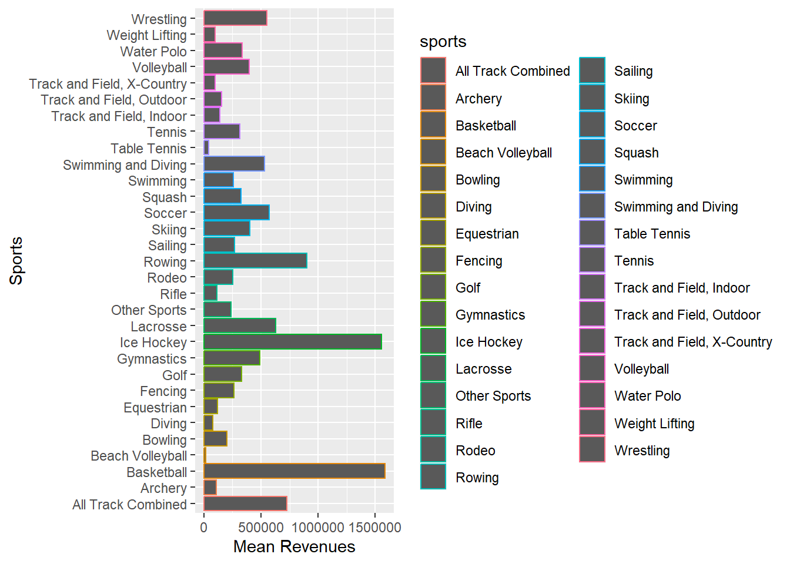
Ordering bars now
myselection %>%
group_by(sports) %>%
summarise(mean_rev_total = mean(total_rev_menwomen)) %>%
ggplot(aes(x = mean_rev_total, y = fct_rev(fct_infreq(sports)), color = sports)) +
geom_bar(stat = "identity") +
labs(x = "Mean Revenues", y = "Sports") 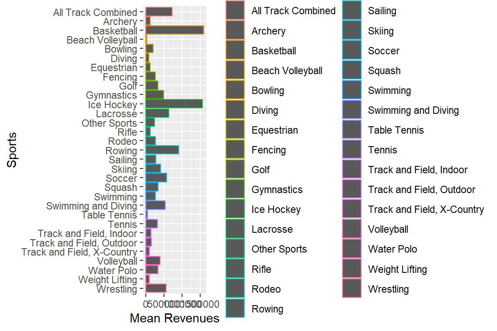
Bars reordered.
myselection %>%
group_by(year, sports) %>%
summarise(mean_rev_total = mean(total_rev_menwomen)) %>%
ggplot(aes(x = mean_rev_total, y = reorder(sports, mean_rev_total),
color = sports)) +
geom_bar(stat = "identity") +
labs(x = "Mean Revenues", y = "Sports") +
theme(legend.position = "none") +
facet_wrap(vars(year))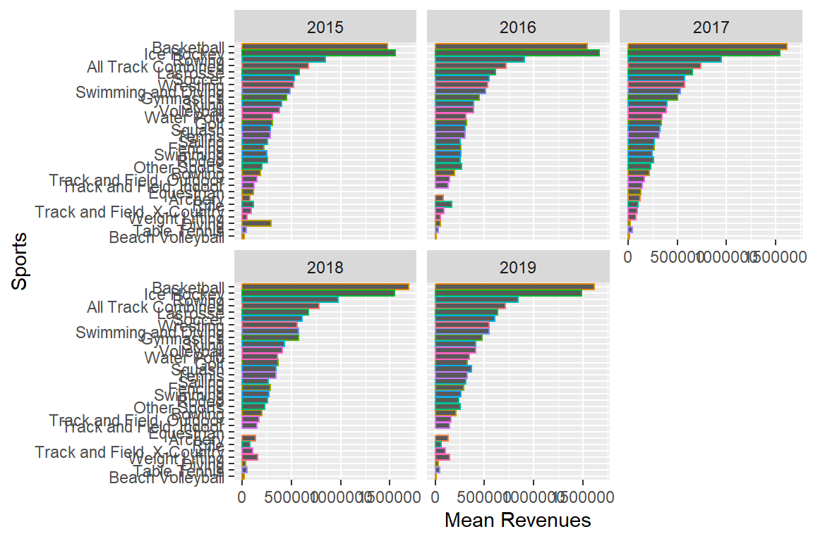
Plot mean revenues per sport and sex.
myselection %>%
group_by(sports) %>%
summarise(mean_rev_men = mean(rev_men),
mean_rev_women = mean(rev_women)) %>%
pivot_longer(cols = c(mean_rev_men,mean_rev_women), names_to = "sex",
values_to = "mean_rev") %>%
ggplot(aes(x = mean_rev, y = reorder(sports, mean_rev), fill = sex)) +
geom_bar(stat = "identity") +
labs(x = "Mean Revenues", y = "Sports", fill = "Sex") +
scale_fill_discrete(labels = c("Men", "Women"))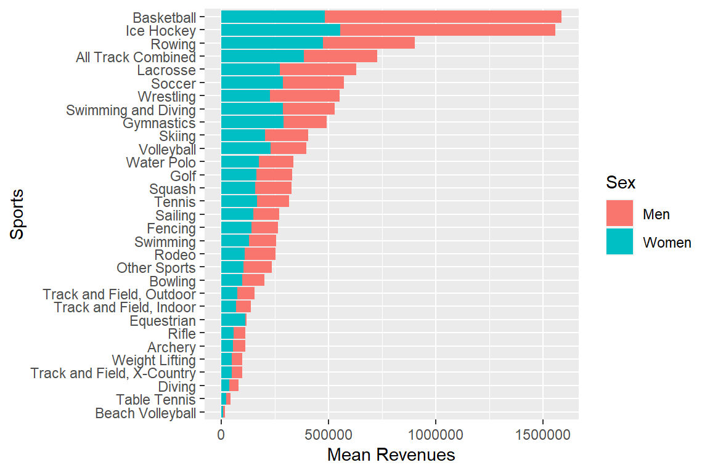
myselection %>%
group_by(sports) %>%
summarise(mean_rev_men = mean(rev_men),
mean_rev_women = mean(rev_women)) %>%
mutate(mean_dif = sqrt((mean_rev_men - mean_rev_women) ^ 2)) %>%
ggplot(aes(x = mean_dif, y = reorder(sports, mean_dif), fill = mean_dif)) +
geom_bar(stat = "identity") +
# facet_wrap(vars(year)) +
labs(x = "Mean Sex Differences in Revenues (USD)", y = "Sports", fill = "USD") 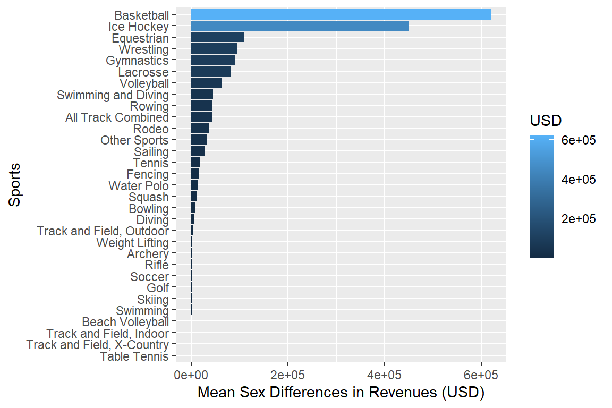
Expenditures in Sport
Plot mean expenditure
myselection %>%
group_by(sports) %>%
summarise(mean_exp_men = mean(exp_men),
mean_exp_women = mean(exp_women)) %>%
pivot_longer(cols = c(mean_exp_men,mean_exp_women), names_to = "sex",
values_to = "mean_exp") %>%
ggplot(aes(x = mean_exp, y = reorder(sports, mean_exp), fill = sex)) +
geom_bar(stat = "identity") +
labs(x = "Mean Expenditure", y = "Sports", fill = "Sex") +
scale_fill_discrete(labels = c("Men", "Women"))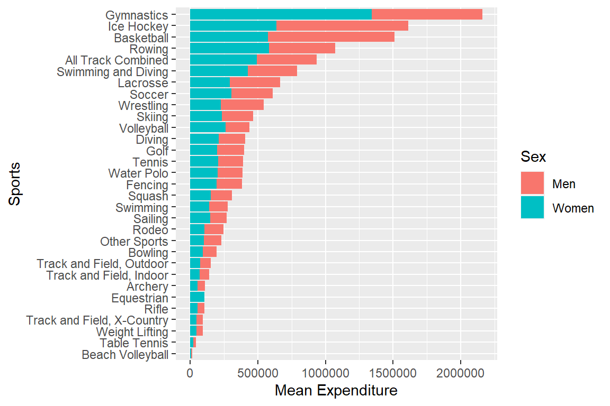
Plotting mean differences by sex.
myselection %>%
group_by(sports) %>% # if facet_wrap, add year
summarise(mean_exp_men = mean(exp_men),
mean_exp_women = mean(exp_women)) %>%
mutate(mean_dif = sqrt((mean_exp_men - mean_exp_women) ^ 2)) %>%
ggplot(aes(x = mean_dif, y = reorder(sports, mean_dif), fill = mean_dif)) +
geom_bar(stat = "identity") +
# facet_wrap(vars(year)) +
labs(x = "Mean Sex Differences (USD)", y = "Sports", fill = "USD") 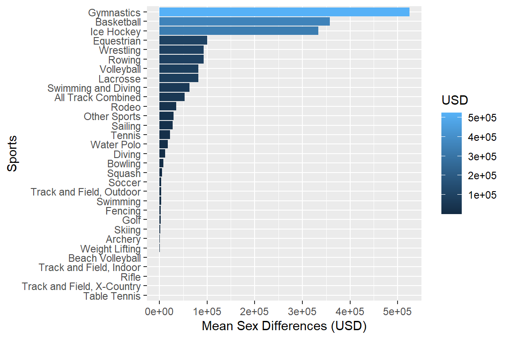
If necessary install RColorBrewer package
# install.packages(RColorBrewer) library(RColorBrewer)Set palettes (display.brewer.all())
discrete_palettes <- list(
c("orange", "skyblue"),
RColorBrewer::brewer.pal(6, "Accent"),
RColorBrewer::brewer.pal(3, "Set2")
)Calculate mean expenditure per participant & plot.
myselection %>%
group_by(sports) %>%
summarise(mean_exp_pamen = mean(exp_per_men),
mean_exp_pawomen = mean(exp_per_women)) %>%
pivot_longer(cols = c(mean_exp_pamen,mean_exp_pawomen), names_to = "sex",
values_to = "mean_exp_pa") %>%
ggplot(aes(x = mean_exp_pa, y = reorder(sports, mean_exp_pa), fill = sex)) +
geom_bar(stat = "identity") +
labs(x = "Year and Institution Mean Expenditure per Participant",
y = "Sports", fill = "Sex") +
scale_fill_discrete(labels = c("Men", "Women"), type = discrete_palettes)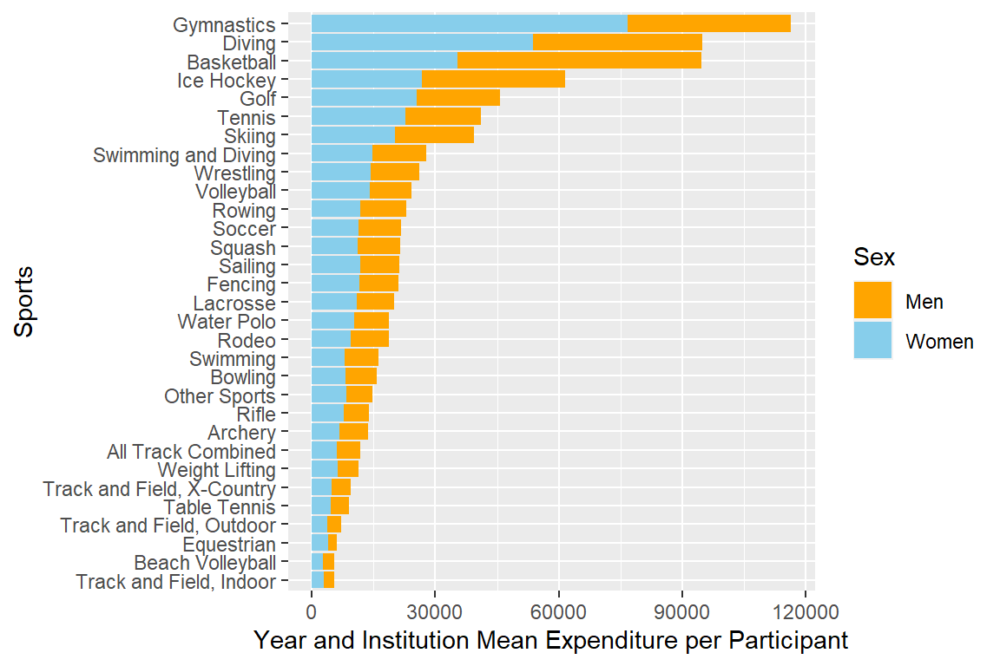
Calculate mean expenditure per participant differences and plot
myselection %>%
group_by(sports) %>%
summarise(mean_exp_pamen = mean(exp_per_men),
mean_exp_pawomen = mean(exp_per_women)) %>%
mutate(mean_pa_dif = sqrt((mean_exp_pamen - mean_exp_pawomen) ^ 2)) %>%
ggplot(aes(x = mean_pa_dif, y = reorder(sports, mean_pa_dif),
fill = mean_pa_dif)) +
geom_bar(stat = "identity") +
# facet_wrap(vars(year)) +
labs(x = "Mean Sex Differences Expenditures per Participant (USD)",
y = "Sports", fill = "USD") +
scale_fill_continuous( type = "viridis")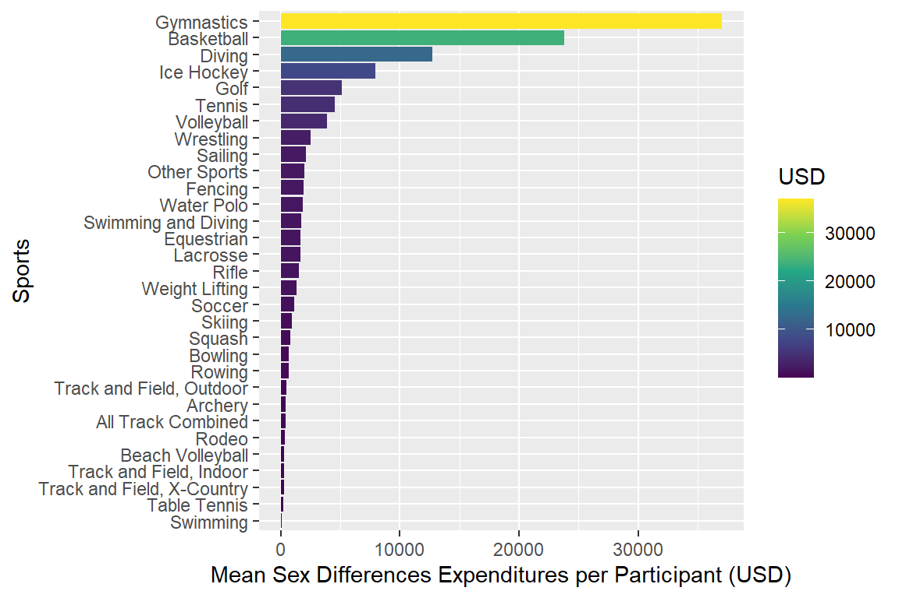
Compare plots with means: Expenditure “Gross” & per participant
plotmeanexp <- myselection %>%
group_by(sports) %>%
summarise(mean_exp_men = mean(exp_men),
mean_exp_women = mean(exp_women)) %>%
pivot_longer(cols = c(mean_exp_men,mean_exp_women), names_to = "sex",
values_to = "mean_exp") %>%
ggplot(aes(x = mean_exp, y = reorder(sports, mean_exp), fill = sex)) +
geom_bar(stat = "identity") +
labs(x = "Year and Institution Mean Expenditure", y = "Sports", fill = "Sex") +
scale_fill_discrete(labels = c("Men", "Women"))
plotmeanexp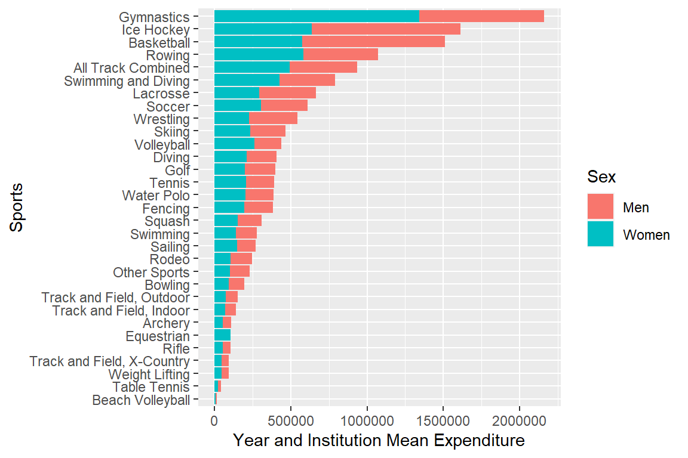
plotmeanexp_pa <- myselection %>%
group_by(sports) %>%
summarise(mean_exp_pamen = mean(exp_per_men),
mean_exp_pawomen = mean(exp_per_women)) %>%
pivot_longer(cols = c(mean_exp_pamen,mean_exp_pawomen), names_to = "sex",
values_to = "mean_exp_pa") %>%
ggplot(aes(x = mean_exp_pa, y = reorder(sports, mean_exp_pa), fill = sex)) +
geom_bar(stat = "identity") +
labs(x = "Year and Institution Mean Expenditure per Participant",
y = "Sports", fill = "Sex") +
scale_fill_discrete(labels = c("Men", "Women"), type = discrete_palettes)
plotmeanexp_paplotmeandifexp <- myselection %>%
group_by(sports) %>% # if facet_wrap, add year
summarise(mean_exp_men = mean(exp_men),
mean_exp_women = mean(exp_women)) %>%
mutate(mean_dif = sqrt((mean_exp_men - mean_exp_women) ^ 2)) %>%
ggplot(aes(x = mean_dif, y = reorder(sports, mean_dif), fill = mean_dif)) +
geom_bar(stat = "identity") +
# facet_wrap(vars(year)) +
labs(x = "Mean Sex Differences in Expenditures (USD)", y = "Sports", fill = "USD")
plotmeandifexp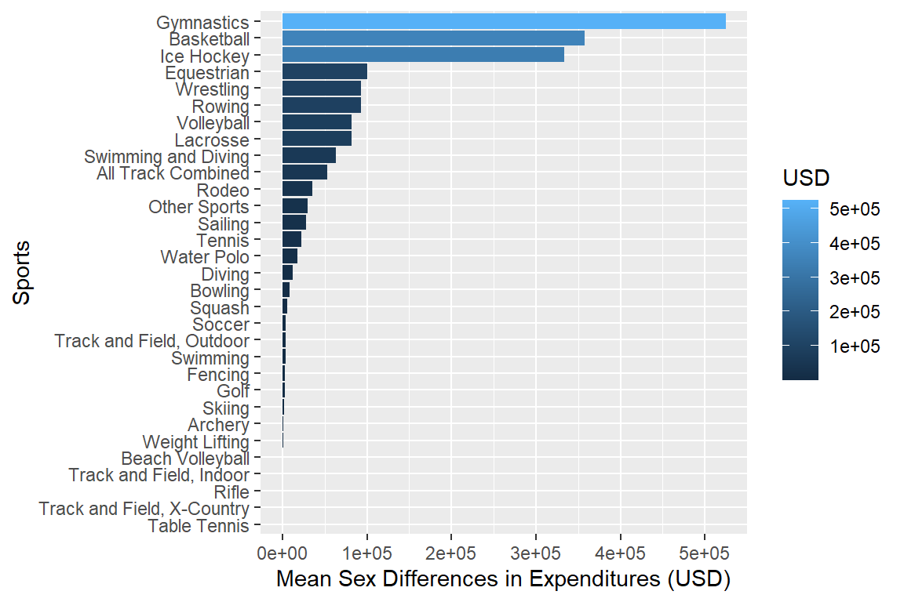
plotmeandifexp_pa <- myselection %>%
group_by(sports) %>%
summarise(mean_exp_pamen = mean(exp_per_men),
mean_exp_pawomen = mean(exp_per_women)) %>%
mutate(mean_pa_dif = sqrt((mean_exp_pamen - mean_exp_pawomen) ^ 2)) %>%
ggplot(aes(x = mean_pa_dif, y = reorder(sports, mean_pa_dif),
fill = mean_pa_dif)) +
geom_bar(stat = "identity") +
# facet_wrap(vars(year)) +
labs(x = "Mean Sex Differences Expenditures per Participant (USD)",
y = "Sports", fill = "USD") +
scale_fill_continuous( type = "viridis")If necessary install package
install.packages("gridExtra")Load package
library(gridExtra)Plots together to compare
gridExtra::grid.arrange(plotmeanexp, plotmeanexp_pa)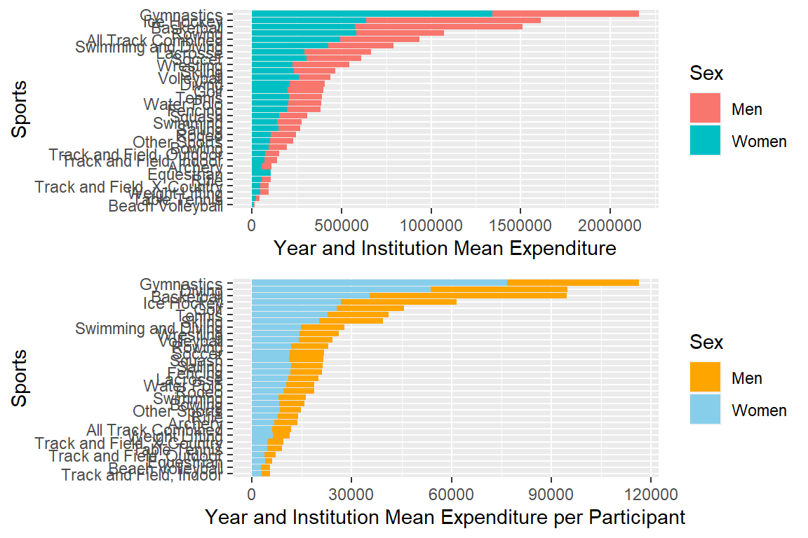
gridExtra::grid.arrange(plotmeandifexp, plotmeandifexp_pa)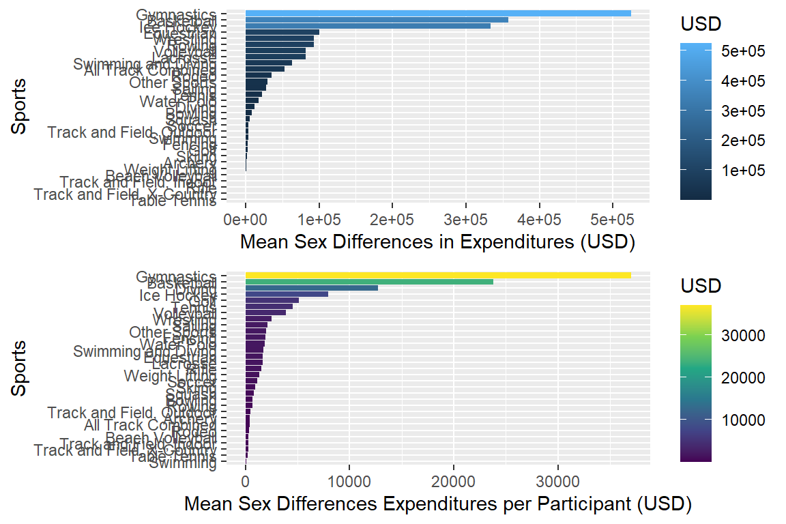
Relationship between expenditure and revenue
plotmeandifexp_pa <- myselection %>%
group_by(sports) %>%
summarise(mean_exp_pamen = mean(exp_per_men),
mean_exp_pawomen = mean(exp_per_women)) %>%
mutate(mean_pa_dif = sqrt((mean_exp_pamen - mean_exp_pawomen) ^ 2)) %>%
ggplot(aes(x = mean_pa_dif, y = reorder(sports, mean_pa_dif),
fill = mean_pa_dif)) +
geom_bar(stat = "identity") +
# facet_wrap(vars(year)) +
labs(x = "Mean Sex Differences Expenditures per Participant (USD)",
y = "Sports", fill = "USD") +
scale_fill_continuous( type = "viridis")plotmeandifrev_pa <- myselection %>%
group_by(sports) %>%
summarise(mean_rev_pamen = mean(rev_per_men),
mean_rev_pawomen = mean(rev_per_women)) %>%
mutate(mean_parev_dif = sqrt((mean_rev_pamen - mean_rev_pawomen) ^ 2)) %>%
ggplot(aes(x = mean_parev_dif, y = reorder(sports, mean_parev_dif),
fill = mean_parev_dif)) +
geom_bar(stat = "identity") +
# facet_wrap(vars(year)) +
labs(x = "Mean Sex Differences Revenues per Participant (USD)",
y = "Sports", fill = "USD") Grid plot
gridExtra::grid.arrange(plotmeandifrev_pa, plotmeandifexp_pa)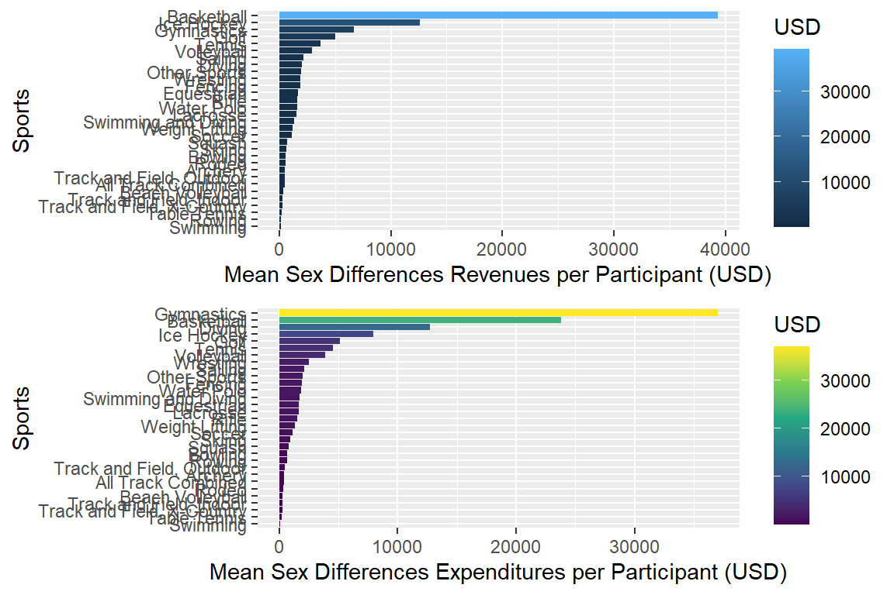
Correlation between Expenditures and Revenues
cor(myselection$exp_men, myselection$rev_men, method = "spearman")[1] 0.9642041Correlation between exp. and rev. per sport.
myselection %>%
group_by(sports) %>%
summarise(assoc_exp_rev_men = cor(exp_men, rev_men, method = "spearman"))# A tibble: 31 x 2
sports assoc_exp_rev_men
<fct> <dbl>
1 All Track Combined 0.855
2 Archery 0.991
3 Basketball 0.996
4 Beach Volleyball 0.987
5 Bowling 0.996
6 Diving 0.531
7 Equestrian 0.5
8 Fencing 0.696
9 Golf 0.914
10 Gymnastics 0.0757
# ... with 21 more rowsPlot association
myselection %>%
group_by(sports) %>%
ggplot(mapping = aes(x = exp_men, y = rev_men)) +
geom_point(alpha = 0.5) +
geom_smooth(method = "lm", se = FALSE, color = "blue") +
labs(x = "Men Expenditure",
y = "Men Revenue", fill = "USD") +
facet_wrap(vars(sports), scales = "free_y")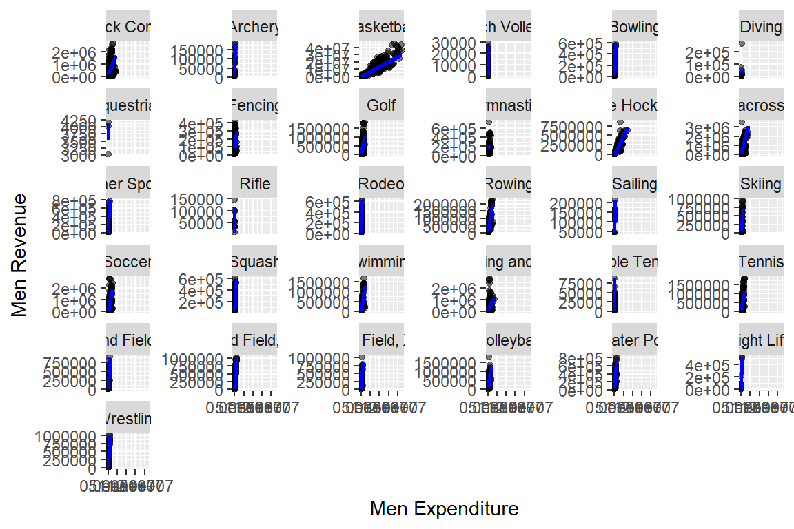
myselection %>%
group_by(sports) %>%
ggplot(mapping = aes(x = exp_women, y = rev_women)) +
geom_point(alpha = 0.5) +
geom_smooth(method = "lm", se = FALSE, color = "red") +
labs(x = "Women Expenditure",
y = "Women Revenue", fill = "USD") +
facet_wrap(vars(sports), scales = "free_y")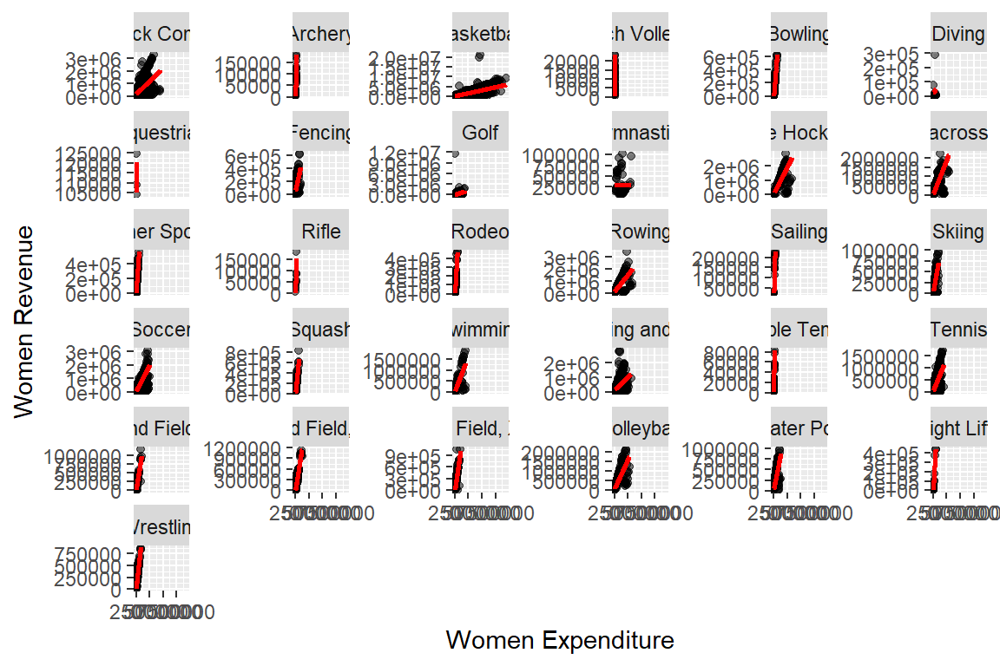
7.7 References
Trinidad, A. (2022, May). NSC-R Workshops: NSC-R Tidy Tuesday. NSCR. Retrieved from https://nscrweb.netlify.app/posts/2022-05-03-nsc-r-tidy-tuesday/